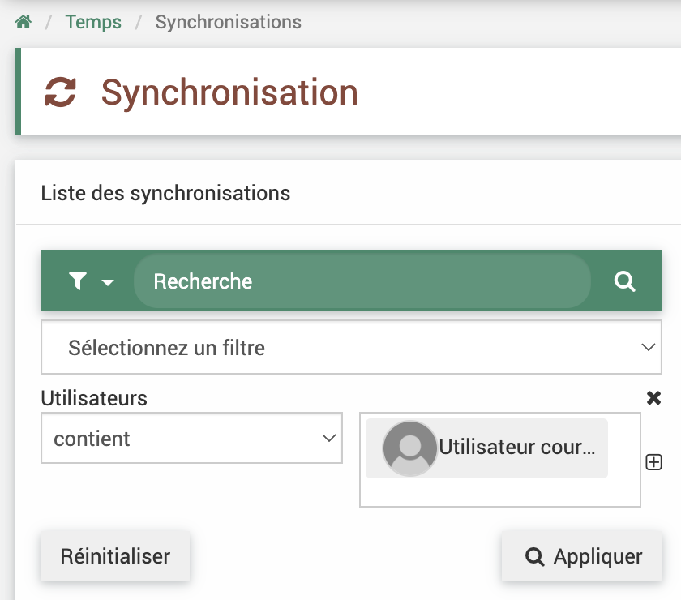
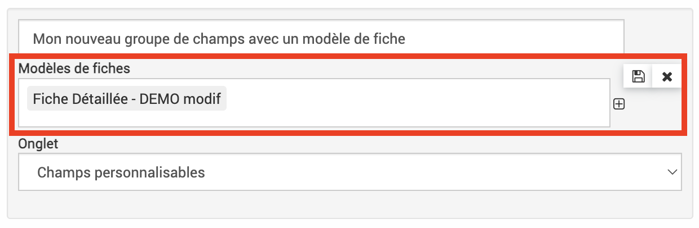

Développements 2024 12
Contexte 2024 12
Un déploiement des derniers développements sur le logiciel EVA est à prévoir au mois de novembre 2024 voir début décembre 2024. À date du 9 décembre il n’a pas encore eu lieu. Il comprend des résolutions d’anomalies, des corrections sur les nouvelles fonctionnalités pour les indicateurs et leurs analyses et des améliorations des fonctionnalités existantes.
Les développements sont détaillés ci-après, avec le détail du ticket GitLab associé et un mode d’emploi pour les nouveautés. Un café EVA sur le sujet a été enregistré et est disponible sur le centre de ressource via ce lien
Rappel nouvelles fonctionnalités indicateurs
Une première partie des développements sur le module indicateur a été livrée en avril 2024 et une deuxième partie plutôt corrective en juillet 2024 incluant :
groupement des indicateurs en « groupe »
création de campagne de recueil des donnnées pour associer une date de saisie attendue et un référent par indicateur
import des mesures d’indicateur
association de pièce-jointes aux mesures
N’hésitez pas à me faire remonter toutes remarques ou anomalies sur ces nouvelles fonctionnalités indicateurs par mail lroumazeilles@parcs-naturels-regionaux.fr
Indicateurs 112024
1. Liaison mesure cible réalisée campagne et hors campagne
La modification et suppression d’une mesure qui fait partie d’une campagne mais depuis un autre module que la campagne était problématique car les mesures cibles et réalisées sont liées dans la campagne, leur métadonnées sont les mêmes, une seule fenêtre permettait de les modifier ensemble. Cependant quand on les modifiait/supprimait depuis le module indicateur ou fiche, cela ne mettait pas bien à jour les modifications/suppression dans les campagnes.
Corrigé : la modification des mesures cible/réalisé d’un campagne depuis les modules fiches et indicateurs ouvrent la même fenêtre que pour les campagnes, ce qui permet de les éditer de la même façon. De même les supressions depuis ces modules entraînent bien la supression du couple cible/réalisé dans la campagne
2. Import de mesures
Les imports de mesures étaient dysfonctionnels à plusieurs niveaux, il y avaot un souci dans l’import des territoires et un souci dans la liaison à la fiche.
Corrigé : la liaison à la fiche a été modifié pour corriger ceci. Il faut maintenant importer les mesures en indiquant pour le document d’import dans la colonne fiche SOIT l’ID de la fiche, SOIT son code, SOIT son titre mais ne pas mélanger les références dans le même import. Ensuite, lors de l’import il faut spécifier dans cette colonne quelle référence a été utilisée.
-> Mis à jour dans la partie Fonctionnalités générales -> Imports de cette documentation.
3. Export word des indicateurs
Il y avait un problème lors de l’export word des indicateurs qui ne fonctionnaient pas quand on indiquait une année dans l’export word. Cette date permet de sélectionner les mesures à exporter qui ont une date réalisée pendant l’année indiquer uniquement.
Corrigé

4. Analyses indicateurs
Plusieurs choses ont été modifiées ou corrigées dans le module d’analyses indicateurs :
Les filtres sur les mesures concernant les campagnes et les périodes ont été remis en état de fonctionnement
Les colonnes disponibles dans le module indicateur sont maintenant aussi disponible dans les analyses et il est donc possible de les exporter en format tableur (ex : description, interprération…)
Affichage par défaut du détail de mesures et non du pourcentage (toujours disponible en cliquant sur le bouton prévu à cet effet)
{kind=link}
Le calcul de pourcentage affiche NaN s’il n’y a pas de valeur cible ou c’est un indicateur qualitatif. Précédemment, dans ce cas il était affiché 100% ce qui était faux.
Sélecteur de périodicité sur le tableau, par mois, trimestre ou année pour agréger les mesures selons ces périodes. Le sélecteur par année peut être grouper sur plusieurs années en cliquant sur le bouton +
{kind=link}
Les indicateurs en groupe sont affichés de façon groupée, il faut cliquer sur la flèche à côté pour étendre/restreindre la liste.
{kind=link}
ATTENTION : des possibilités de graphiques sont présentes mais peuvent présenter des dysfonctionnements. Elles seront potentiellement corrigées lors de la mise à jour front. Pour l’instant il est pluôt conseigné de les utiliser pour un seul indicateur à la fois ou bien d’exporter les données au format tableur et faire des représentations ailleurs
5. Liaison indicateurs réseau et parcs
Il existe encore des dysfonctionnements pour le remplissage d’indicateur commun à un même réseau, par exemple pour le tableau de bord des PNx.
En cours de correction
Synchronisations des temps
1. Modification des titres de synchronisations
Certains titres de synchronisations des temps n’étaient pas modifiables depuis la vue tableau, leur modification et sauvegarde donnait une erreur. Il est maintenant possible de les modifier sans erreur.
Corrigé
2. Ajout d’un filtre utilisateurs dans les synchronisations
Dans le tableau des synchronisations des temps, il est maintenant possible de filtrer par utilisateur. Le nom des utilisateurs devrait aussi être bien affiché maintenant.
{kind=link}
Fonctionnalités annuaire
Affichage et export de tous les champs
Des champs personnalisables peuvent être créés pour les contacts et les structures (ex : champs de consentement d’envoi d’une newsletter), il est aussi possible d’ajouter une liste d’email pour un même contact. Ces champs sont maintenant visibles dans le tableau des contacts et des structures, sont filtrables et sont exportables au format tableur.
Fonctionnalités budget
Améliorations et corrections des analyses budget
Ajout de certaines colonnes qui étaient remplies dans les fiches dans l’onglet budget mais non accessible en analyses. Maintenant, elles peuvent être affichées et filtrées. Les champs ajoutés (peuvent être nommés différemment dans votre EVA) :
Bordereau du mandatement
Mandat
Engagement
Date facture
Créé le
Modifié le
Dans les analyses budget, les calculs de solde et de ratio étaient parfois faux, cela a été corrigés.
Corrigé
Champs personnalisables
Le renseignement du modèle de fiche lors de la création d’un champ ne marchait pas, cela pouvait mener au masquage des champs dans les modèles de fiches après modification du champs. Précédemment le modèle de fiche pour un champ pouvait d’ajouter via le champs et via le modèle ce qui portait donc à confusion parfois. La correction permet maintenant de paramétrer le modèle de fiche directement lors de la création du groupe de champs et de ne plus le faire via le modèle.
{kind=link}
Corrigé